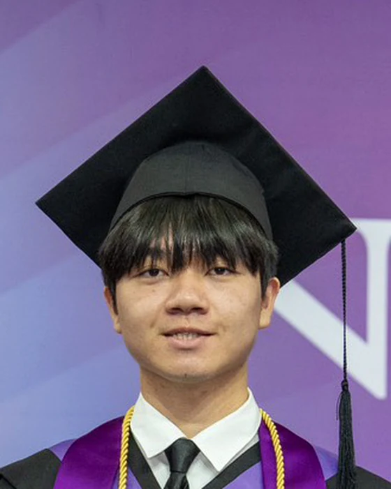

University學校
SECTION 06 · WHO IS RECORDING第 06 節 · 誰在記錄
ABOUT關於
I work on how brains and machines perform inference under uncertainty — and on the shared limits of both.我研究大腦與機器如何在不確定下做推論,以及兩者共同的極限。
L2/3
In his own words他自己的說法
I am a B.S. graduate of National Tsing Hua University, where I double-majored in Physics and Electrical Engineering & Computer Science (AI Track).
My theory work asks what predictive coding needs in order to remember. Two first-co-authored manuscripts are under review: one establishes a Tweedie–Hopfield correspondence identifying associative memory as the Bayesian denoiser that predictive coding implicitly requires; the other replaces the deterministic MAP inference of temporal predictive coding with preconditioned Langevin dynamics, so the filtering posterior becomes the flow's unique stationary density.
My empirical work points the same machinery at real neural data: I am reconstructing 3D spatial representations from fMRI signals with generative decoding models at the Human-Centered Machine Intelligence Lab, under Prof. Po-Chih Kuo.
Before that I worked on diffusion models and robustness — controllable generation at Academia Sinica, and subgroup generalisation in chest X-ray classification.
我畢業於國立清華大學,雙主修物理系與電機資訊學院學士班(AI 組)。
理論方面,我在問一個問題:預測編碼要能夠「記憶」,需要什麼?兩篇共同第一作者的論文正在 審查中——一篇建立 Tweedie–Hopfield 對應關係,指認出聯想記憶正是預測編碼在推論時暗中需要的貝氏去噪器;另一篇把時間預測編碼的確定性 MAP 推論換成加了 preconditioner 的 Langevin 動力學,讓濾波後驗成為該流的唯一穩態分佈。
實證方面,我把同一套機制指向真實的神經資料:在郭柏志老師的 Human-Centered Machine Intelligence Lab,用生成式解碼模型從 fMRI 訊號重建三維空間表徵。
在那之前,我做的是 diffusion 模型與穩健性——中研院的可控生成研究,以及胸腔 X 光分類的子群泛化問題。

L4
The short version簡短版本
Major主修
Physics × EECS (AI Track), double major物理系 × 電資學士班(AI 組),雙主修
Now現況
HMI Lab, NTHU · visiting UCLA清華 HMI Lab · 訪問 UCLA
Looking for尋找
PhD positions in NeuroAI, 2027 entryNeuroAI 博士班,2027 入學
L5a
Honours獎項
Five, between 2023 and 2026, each with what it was actually for. They are set out in full on the record, alongside the axis they sit on.五項，介於 2023 至 2026 年之間，每一項都附上實際的事由。完整內容寫在紀錄頁，與它們所在的那條軸放在一起。
L6